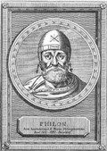

The Jewish Logos
The cousin of Jesus in Alexandria possesses all the attributes assigned to Jesus in the Epistles, except the crucifixion & eucharist.
| Mysticism | a doctrine that maintains that one can gain knowledge of reality
that is not accessible to sense perception or to reason. |

Philo of Alexandria 20 BCE - 50 CE was an Hellenized Jew who spans two cultures: the Greek and the Hebrew.
When Hebrew mythical thought met Greek philosophical thought in the first century BCE.
it was only natural that someone would try to develop speculative and philosophical justification for Judaism in terms of Greek philosophy.
This mix of Platonic Philosophy & Judaism hellenic was the basis for the majority of Christian writings apart from the Gospels:
- All the Epistles
- Epistle to Diognetus (130)
- Justin Martyr (100-165)
- Minucius Felix (?)
- Athenagoras of Athens (133-190)
- Theophilus of Antioch (117-181)
- Clement of Alexandria (150-215) who called Philo "the Pythagorean".
- Origen of Alexandria (185-254)
- Eusebius of Caesarea (260/265-339) who claimed that Philo met Peter at Rome and was admiring Christianity and was 'almost' Christian. All this is BS of course.
The pivotal and the most developed doctrine in Philo's writings on which hinges his entire philosophical system,
is his doctrine of the Logos. He made a synthesis of the two worlds he knew and attempted to explain Hebrew thought in terms of Greek philosophy
by introducing the Stoic concept of the Logos into Judaism. In the process the Logos became transformed
from a metaphysical entity into an extension of a divine and transcendental anthropomorphic being and
mediator between God and men. Philo offered various descriptions of the Logos.
Like Paul, Philo...
- is a Greekspeaking Jew from the diaspora.
- has a universal theology that doesn't exclude Gentiles from Judaism.
- fuses Greek philosophical concepts with Hebrew religious thought and provides the foundation for Christianity.
- uses what he calls "the method of the mysteries" (Inge op cit 355) to reveal Jewish scriptures as allegories encoding secret spiritual teachings.
- speaks figuratively about body & soul:
"Now, when we are alive, we are so though our soul is dead and buried in our body, as if in a tomb. But if it were to die, then our soul would live according to its proper life being released from the evil and dead body to which it is bound"De Opificio Mundi 67-69, Legum Allegoriarum 1.108
- contrasts the spirit with the body and regards the physical nature of man as something defective and an obstacle to his development that can never be fully surmounted. But higher and more important is the spiritual nature of man.
- believes in the heavenly body:
"There are two kinds of men. The one is Heavenly Man, the other earthly. The Heavenly Man being in the image of God has no part in corruptible substance, or in any earthly substance whatever; but the earthly man was made of germinal matter which the writer [of Genesis] calls 'dust'."leg. 1.31. See also Paul in 1 Corinthians 15:44-49 where he uses the term 'man' for Jesus."We recognize, it is true, the traces of the cosmic origin of the Divine intermediaries; the angels are material intermediaries as well as spiritual, and Philo accepts the belief in the power of the heavenly bodies as an inferior degree of wisdom."Catholic Encyclopedia Online
- believes that man's final goal and ultimate bliss is in the "knowledge of
the true and living God" (De Decalogo 81; De Abrahamo 58; Praem. 14); "such
knowledge is the boundary of happiness and blessedness" (Quod Deterius Potiori Insidiari Soleat 86).
Philo divides human dispositions into three groups:- the best is given the vision of God,
- the next has a vision on the right i.e., the Beneficent or Creative Power whose name is God,
- the third has a vision on the left, i.e., the Ruling Power called Lord (De Abrahamo 119-130).
Like the Christ of Paul, the Logos of Philo...
- resides in ScripturesThe Scripture Symbolizes the Logos as the revealer of God (Genesis 31:13; 16:8; etc) by an angel of the Lord (De Somniis 1.228-239; De Cherubim 1-3) and the utterance of God since God's words do not differ from his actions (De Sacrificiis Abelis et Caini 8; De Somniis 1.182; De Opificio Mundi 13).When the scripture uses the Greek term for God ho theos, it refers to the true God, but when it uses the term theos, without the article ho, it refers not to the God, but to his most ancient Logos (De Somniis 1.229-230).For Philo, the tabernacle of the Old Testament was "a thing made after the model and in imitation of Wisdom", and he finds in the Bible indications of the operation of the Logos, e.g., the biblical cherubim are the symbols of the two powers of God but the flaming sword (Genesis 3.24) is the symbol of the Logos conceived before all things and before all manifest (De Cherubim 1.27-28; De Sacrificiis Abelis et Caini 59; De Abrahamo 124-125; Quis Rerum Divinarum Heres Sit 166; Quaestiones et Solutiones in Exodum 2.68)."God therefore sows and implants terrestrial virtue in the human race, being an imitation and representation of the heavenly virtue."LA 1.45.
-
is an Intermediary, Messenger and Mediator between God & HumanityThe Logos as "interpreter" announces God's designs to man, acting in this respect as prophet and priest.According to Philo, man's highest union with God is limited to God's manifestation as the Logos."And the father who created the universe has given to his archangel and most ancient Logos a pre-eminent gift, to stand on the confines of both, and separate that which had been created from the Creator. And this same Logos is continually a suppliant to the immortal God on behalf of the mortal race, which is exposed to affliction and misery; and is also the ambassador, sent by the Ruler of all, to the subject race. And the Logos rejoices.... sayingQuis Rerum Divinarum Heres Sit 205-206"And I stood in the midst, between the Lord and you" Numbers 16:48;neither being uncreated as God, nor yet created as you, but being in the midst between these two extremities, like a hostage, as it were, to both parties."
-
is the Image and Revealer of GodThough God is hidden, his reality is made manifest by the Logos that is God's image (De Somniis 1.239; De Confusione Linguarum 147-148) and by the sensible universe, which in turn is the image of the Logos.Through the Logos of God men learn all kinds of instruction and everlasting wisdom (De Fuga et Inventione 127-120).The Logos is the "cupbearer of God ... being itself in an unmixed state, the pure delight and sweetness, and pouring forth and joy, and ambrosial medicine of pleasure and happiness."De Somniis 2.249
-
is the First-born Son of God"But the most universal of all things is God; and in the second place is the Logos of God"Legum Allegoriarum 2.86Philo transforms the Stoic impersonal and immanent Logos into a being who was neither eternal like God nor created like creatures, but begotten from eternity. The Logos is the the first-begotten Son of the Uncreated Father and the eldest and chief of the angels. It exists as such before everything else all of which are secondary products of God's thought and therefore it is called the "first-born.""For the Father of the universe has caused him to spring up as the eldest son, whom, in another passage, he [Moses] calls the first-born; and he who is thus born, imitating the ways of his father, has formed such and such species, looking to his archetypal patterns"De Confusione Linguarum 63
-
helped God Create the UniversePhilo believes that the Logos is "the man of God" (De Confusione Linguarum 41) or the shadow of God that was used as an instrument and a pattern of all creation (Legum Allegoriarum 3.96). "Now it is an especial attribute of God to create, and this faculty it is impious to ascribe to any created being" (De Cherubim 77).The expression of this act of God, which is at the same time his thinking, is his Logos (De Providentia 1.7; De Sacrificiis Abelis et Caini 65; De Vita Mosis 1.283). The Logos has a special relation to man. It is the type; man is the copy. The similarity is found in the mind of man. For the shaping of his nous, man (earthly man) has the Logos (the "heavenly man") for a pattern. See Jewish Encyclopedia
-
sustains the UniverseThe Logos is the bond holding together all the parts of the world.And as a part of the human soul it holds the body together and permits its operation."And the Logos, which connects together and fastens every thing, is peculiarly full itself of itself, having no need whatever of any thing beyond."Quis Rerum Divinarum Heres Sit 188"the Logos of the living God is the bond of everything, holding all things together and binding all the parts, and prevents them from being dissolved and separated".De Profugis
-
is Mystically Revealed through Spiritual VisionFor Philo, mystic vision allows our soul to see the Divine Logos (De Ebrietate 152) and achieve a union with God (Deut. 30:19-20; De Posteritate Caini 12). According to Philo these powers of the Logos can be grasped at various levels (De Fuga et Inventione 94-95; De Abrahamo 124-125)
- At the summit level, an indivisible unity.
- As the Creative Power
- As the Regent Power
-
is the Expiator of Sins and procures Forgiveness and BlessingsWhen acting as the high priest, he softens punishments by making the merciful power stronger than the punitive."For it was indispensable that the man who was consecrated to the Father of the world [the high priest] should have as a paraclete, his son, the being most perfect in all virtue, to procure forgiveness of sins, and a supply of unlimited blessings."De Vita Mosis 2.134
-
is Sent Down to Earth to Vivify and Purify our Soul"God sends forth upon it the stream of his own accurate wisdom, and causes the changed soul to drink of unchangeable health; ... and of it he gives drink to the souls that love God; and they, when they have drunk, are also filled with the most universal manna; for manna is called something which is the primary genus of every thing."Legum Allegoriarum 2.86The Logos has a special mystic influence upon the human soul, illuminating it and nourishing it with a higher spiritual food, like the manna, of which the smallest piece has the same vitality as the whole."in the midst of our impurity in order that we may have something whereby we may be purified, washing off and cleansing all those things which dirty and defile our miserable life, full of all evil reputation as it is".Quis Rerum Divinarum Heres Sit 112-113
-
prefigures Christian's Trinity inside God's UnicityThe Logos is an agent that unites two powers of the transcendent God :"...that in the one living and true God there were two supreme and primary powers, Goodness [or Creative Power] and Authority [or Regent Power]; and that by his Goodness he had created every thing; and that by his Authority he governed all that he had created; and that the third thing which was between the two, and had the effect of bringing them together was the Logos, for it was owing to the Logos that God was both a ruler and good."De Cherubim 1.27-28These powers are inherent in transcendental God, and that God himself may be thought of as multiplicity in unity. The Beneficent (Creative) and Regent (Authoritative) Powers are called God and Lord, respectively. Goodness is Boundless Power, Creative, and God. The Regent Power is also Punitive Power and Lord (Quis Rerum Divinarum Heres Sit 166). Creative Power, moreover, permeates the world, the power by which God made and ordered all things.According to Philo, the two powers of God are separated by God himself who is standing above in the midst of them (Quis Rerum Divinarum Heres Sit 166). Referring to Genesis 18:2 Philo claims that God and his two Powers are in reality one. To the human mind they appear as a Triad, with God above the powers that belong to him. (Quaestiones et Solutiones in Genesim 4.2). In addition to these two main powers, there are other powers of the Father and his Logos, including merciful and legislative (De Fuga et Inventione 94-95).
Most of the material is extracted from
Philo on the 'The Internet Encyclopedia of Philosophy'.
"It is a matter of debate whether Philo considered the Logos as a reality, as a distinct identity
having real existence, or as no more than an summaryion."
Martin McNamara Intertestamental Literature, pp. 232-233"A strong monotheist and Jewish mind like Philo stopped short of making his Son and Logos a personal divine being.
But other Jews didn't feel the same rigid restrictions toward God,
and could envision their Son as a personal divinity beside God in heaven.
From the Logos of Greek and Philonic philosophy to Paul's Christ Jesus is scarcely a stone's throw."
Earl Doherty The Jesus Puzzle
Open Popup menu to navigate other pages